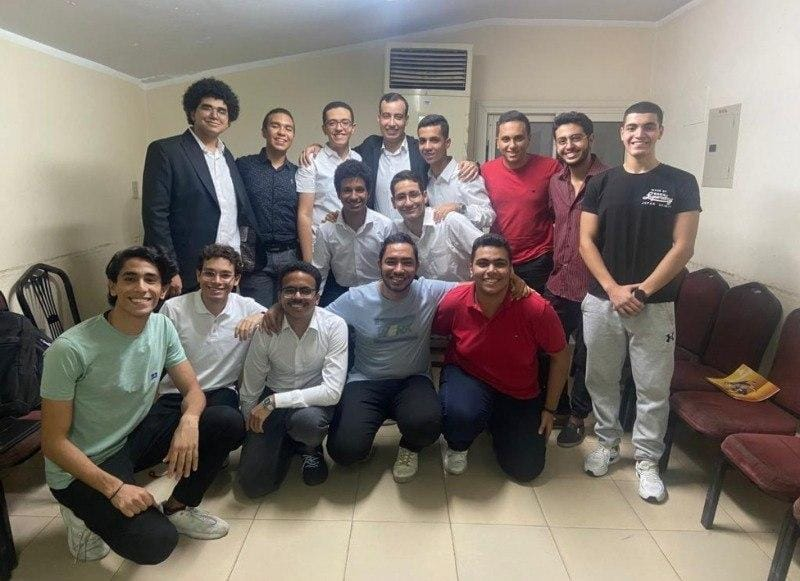
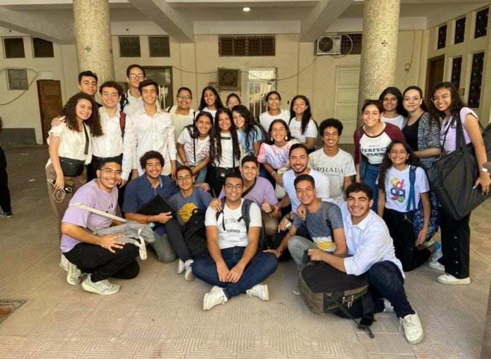
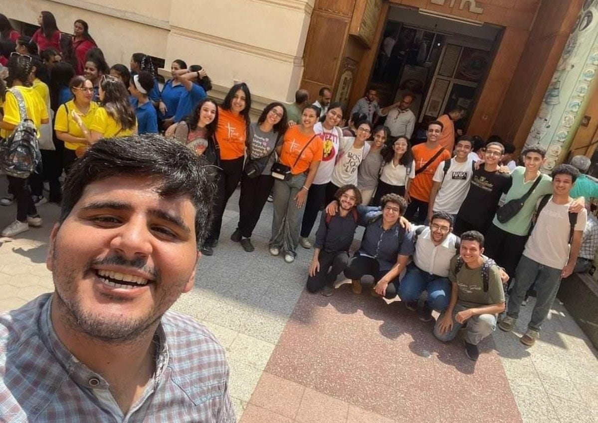
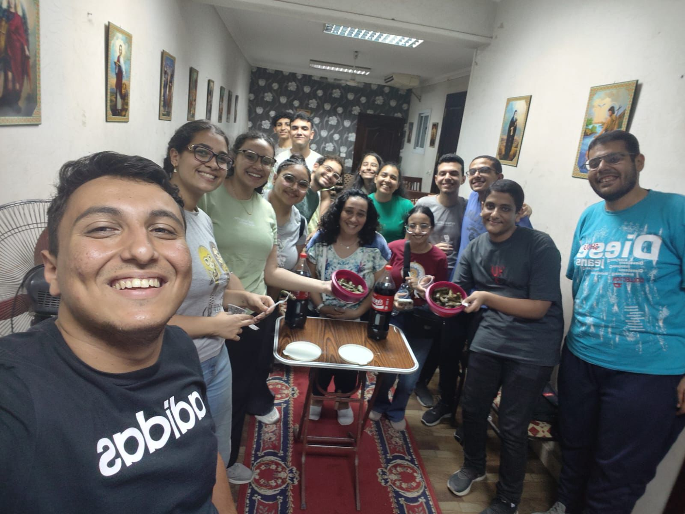
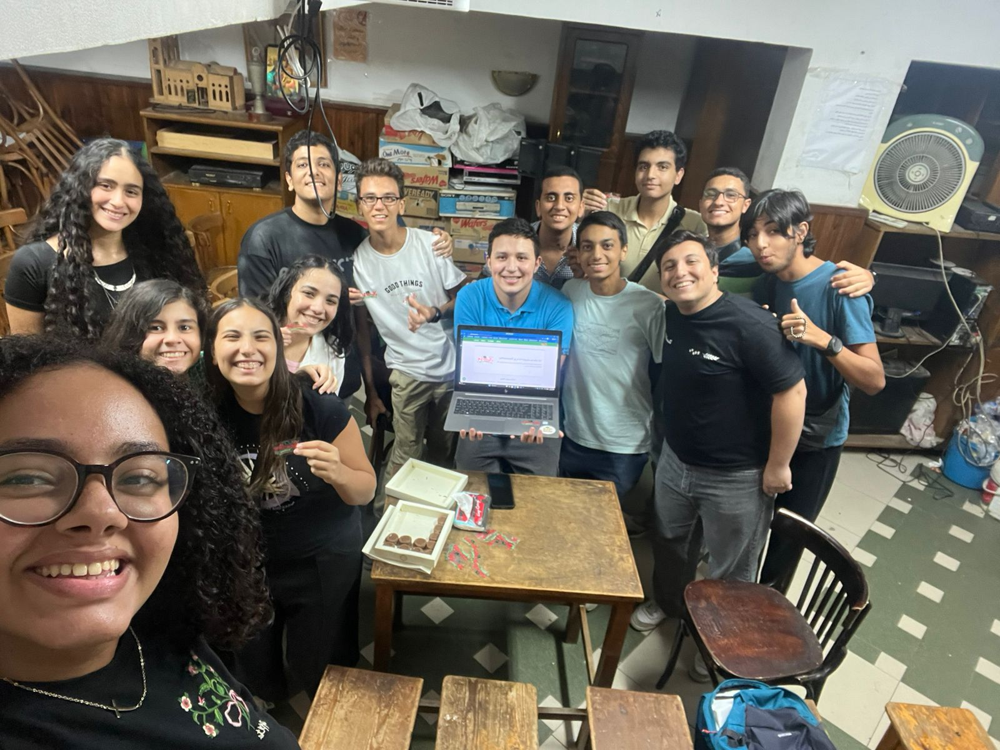

كانت في خدمة ثانوي بنين فريق ثانوي سوفت وير و دخلنا مهرجان كرازة و اخدنا مركز اول علي مستوي الكرازة

و بقي ثانوي شباب بنين و بنات سوفت وير تيم و دخلنا مهرجان الكرازة ب 5 مشاريع و مشروع فردي و اخدنا مركز اول علي مستوي الكرازة للمرة الثانية

سوفت وير كبر و عملنا الاسفار القانونية بكذا ترجمه و تفسيرها و بدانا نفكر ونعمل مشروع يساعد الكنيسة في حجز المسرح و ترتيب الاماكن

py-thanawy 25 اتعلمنا و اشتغلنا ب python hgs

فريق py-thanawy 26 اتعلم وفهم عن الذكاء الاصطناعي اللي كلنا بقينا بمستخدمه دلوقتي وعملنا شات بوت وتعلمنا نعمل ويب سايت
